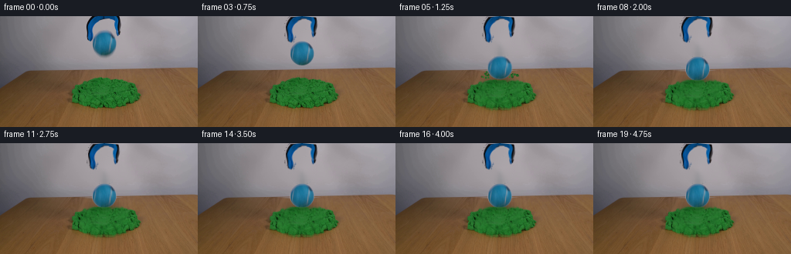
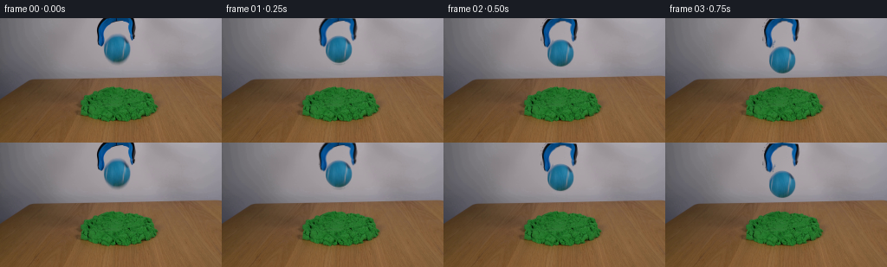
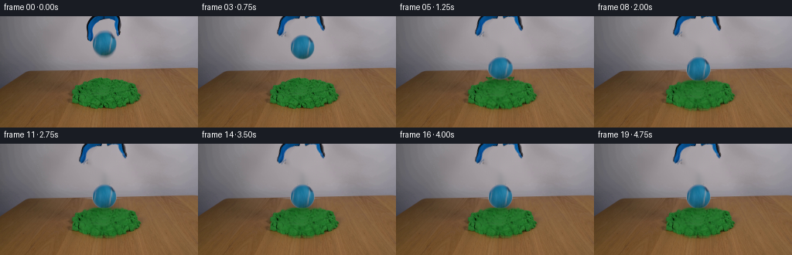
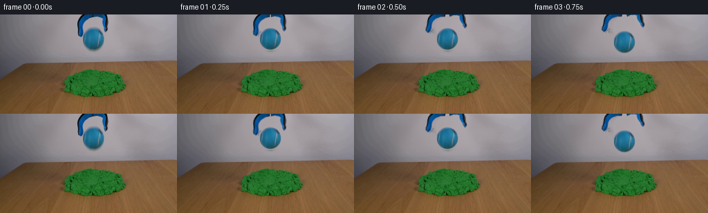

CODING AGENTS AS PIXEL WORLD MODELS
traex/DeepSeek-V4.1-Flash · 0017
点击播放 · 原生 RGB 像素
逐轮保存的候选
回放视频、检查图与代码变化。
每份候选均可单独播放。实际图片检查记录在下方工具轨迹中。
候选 01播放与检查图
点击播放 · 原生 RGB 像素


展开代码变化
--- 上一保存版本
+++ 本次保存版本
@@ -0,0 +1,366 @@
+from pathlib import Path
+
+import cv2
+import numpy as np
+from PIL import Image
+
+import artifact_io
+
+
+WIDTH = 256
+HEIGHT = 144
+FRAME_COUNT = 20
+FPS = 4.0
+
+BALL_CENTER = np.array([134.5, 34.8], dtype=np.float32)
+BALL_RADIUS = 15.8
+SAND_TOP = 80.0
+IMPACT_X = 134.5
+
+
+def _composite_premultiplied(base, color, alpha):
+ a = alpha[..., None].astype(np.float32)
+ return base.astype(np.float32) * (1.0 - a) + color.astype(np.float32) * a
+
+
+def _warp_layer(rgb, alpha, matrix, size=(WIDTH, HEIGHT)):
+ premultiplied = rgb.astype(np.float32) * alpha[..., None]
+ warped_rgb = cv2.warpAffine(
+ premultiplied,
+ matrix,
+ size,
+ flags=cv2.INTER_LINEAR,
+ borderMode=cv2.BORDER_CONSTANT,
+ borderValue=0,
+ )
+ warped_alpha = cv2.warpAffine(
+ alpha.astype(np.float32),
+ matrix,
+ size,
+ flags=cv2.INTER_LINEAR,
+ borderMode=cv2.BORDER_CONSTANT,
+ borderValue=0,
+ )
+ safe_alpha = np.maximum(warped_alpha, 1e-5)
+ warped_rgb = np.clip(warped_rgb / safe_alpha[..., None], 0, 255)
+ return warped_rgb, np.clip(warped_alpha, 0, 1)
+
+
+def _build_assets(source):
+ image = source.astype(np.float32)
+ yy, xx = np.mgrid[0:HEIGHT, 0:WIDTH]
+
+ chroma = image.max(axis=2) - image.min(axis=2)
+ luminance = image.mean(axis=2)
+ object_roi = np.zeros((HEIGHT, WIDTH), dtype=bool)
+ object_roi[0:57, 108:161] = True
+ foreground = object_roi & ((chroma > 11) | (luminance < 112))
+ foreground = cv2.morphologyEx(
+ foreground.astype(np.uint8), cv2.MORPH_CLOSE, np.ones((2, 2), np.uint8)
+ ).astype(bool)
+
+ ball_circle = (xx - BALL_CENTER[0]) ** 2 + (yy - BALL_CENTER[1]) ** 2 <= (
+ BALL_RADIUS + 1.2
+ ) ** 2
+ jaw_candidates = (foreground & ~ball_circle).astype(np.uint8)
+ count, labels, stats, _ = cv2.connectedComponentsWithStats(jaw_candidates, 8)
+
+ jaw_mask = np.zeros((HEIGHT, WIDTH), dtype=bool)
+ for index in range(1, count):
+ _, top, _, _, area = stats[index]
+ if top == 0 and area >= 25:
+ jaw_mask |= labels == index
+
+ removal_mask = np.zeros((HEIGHT, WIDTH), dtype=np.uint8)
+ removal_mask[jaw_mask] = 255
+ removal_mask[ball_circle] = 255
+ removal_mask = cv2.dilate(removal_mask, np.ones((3, 3), np.uint8), iterations=1)
+ clean_background = cv2.inpaint(
+ source[:, :, ::-1], removal_mask, 5, cv2.INPAINT_TELEA
+ )[:, :, ::-1]
+
+ background_delta = np.linalg.norm(
+ source.astype(np.float32) - clean_background.astype(np.float32), axis=2
+ )
+ jaw_support = cv2.dilate(
+ jaw_mask.astype(np.uint8), np.ones((5, 5), np.uint8), iterations=1
+ ).astype(bool)
+ jaw_alpha = np.clip((background_delta - 3.0) / 28.0, 0.0, 1.0)
+ jaw_alpha *= jaw_support
+
+ left_mask = jaw_alpha.copy()
+ left_mask[:, 135:] = 0
+ right_mask = jaw_alpha.copy()
+ right_mask[:, :135] = 0
+
+ left_rgb = source.astype(np.float32)
+ right_rgb = source.astype(np.float32)
+
+ ball_distance = np.sqrt(
+ (xx - BALL_CENTER[0]) ** 2 + (yy - BALL_CENTER[1]) ** 2
+ )
+ ball_alpha = np.clip(
+ (BALL_RADIUS + 0.45 - ball_distance) / 1.05, 0.0, 1.0
+ )
+ ball_rgb = source.astype(np.float32)
+
+ source_green = (
+ (source[:, :, 1].astype(np.float32) > source[:, :, 0].astype(np.float32) * 1.14)
+ & (
+ source[:, :, 1].astype(np.float32)
+ > source[:, :, 2].astype(np.float32) * 1.30
+ )
+ & (source[:, :, 1] > 45)
+ )
+ green_y, green_x = np.where(source_green)
+ if len(green_x):
+ sand_palette = source[green_y, green_x].astype(np.float32)
+ else:
+ sand_palette = np.array([[36.0, 112.0, 43.0]], dtype=np.float32)
+
+ return {
+ "clean": clean_background,
+ "left_rgb": left_rgb,
+ "left_alpha": left_mask.astype(np.float32),
+ "right_rgb": right_rgb,
+ "right_alpha": right_mask.astype(np.float32),
+ "ball_rgb": ball_rgb,
+ "ball_alpha": ball_alpha.astype(np.float32),
+ "sand_palette": sand_palette,
+ "source_green": source_green,
+ }
+
+
+def _release_angle(time_s):
+ if time_s <= 0.08:
+ return 0.0
+ opening = np.clip((time_s - 0.08) / 0.55, 0.0, 1.0)
+ eased = opening * opening * (3.0 - 2.0 * opening)
+ return 5.2 * eased
+
+
+def _impact_time(gravity=58.0, release_time=0.08, contact_y=64.0):
+ fall = contact_y - float(BALL_CENTER[1])
+ return release_time + np.sqrt(2.0 * fall / gravity)
+
+
+def _ball_state(time_s):
+ gravity = 58.0
+ release_time = 0.08
+ contact_y = 64.0
+ impact_time = _impact_time(gravity, release_time, contact_y)
+
+ if time_s <= release_time:
+ return float(BALL_CENTER[1]), 1.0, 1.0, 0.0
+ if time_s < impact_time:
+ elapsed = time_s - release_time
+ y = float(BALL_CENTER[1]) + 0.5 * gravity * elapsed * elapsed
+ return y, 1.0, 1.0, 0.0
+
+ tau = time_s - impact_time
+ # A strongly damped contact response: sink into the kinetic sand, rebound
+ # once by a small amount, then remain settled.
+ vertical_offset = 4.0 * np.exp(-5.2 * tau) * np.sin(17.0 * tau)
+ settled_sink = 4.0 * (1.0 - np.exp(-4.0 * tau))
+ y = contact_y + vertical_offset + settled_sink
+
+ squash = 0.105 * np.exp(-((tau - 0.09) / 0.085) ** 2)
+ scale_y = 1.0 - squash
+ scale_x = 1.0 + 0.52 * squash
+ rotation = -1.4 * np.exp(-4.0 * tau) * np.sin(8.0 * tau)
+ return y, scale_x, scale_y, rotation
+
+
+def _draw_jaws(frame, assets, time_s):
+ angle = _release_angle(time_s)
+ if angle <= 1e-5:
+ return frame
+
+ pivot = (BALL_CENTER[0], -10.0)
+ left_matrix = cv2.getRotationMatrix2D(pivot, angle, 1.0)
+ right_matrix = cv2.getRotationMatrix2D(pivot, -angle, 1.0)
+
+ for rgb, alpha, matrix in (
+ (assets["left_rgb"], assets["left_alpha"], left_matrix),
+ (assets["right_rgb"], assets["right_alpha"], right_matrix),
+ ):
+ warped_rgb, warped_alpha = _warp_layer(rgb, alpha, matrix)
+ frame = _composite_premultiplied(frame, warped_rgb, warped_alpha)
+ return frame
+
+
+def _draw_ball(frame, assets, time_s):
+ center_y, scale_x, scale_y, rotation = _ball_state(time_s)
+ cx, cy = float(BALL_CENTER[0]), float(BALL_CENTER[1])
+
+ matrix = cv2.getRotationMatrix2D((cx, cy), rotation, 1.0)
+ matrix[0, :2] *= scale_x
+ matrix[1, :2] *= scale_y
+ matrix[0, 2] += BALL_CENTER[0] - scale_x * cx
+ matrix[1, 2] += center_y - scale_y * cy
+
+ warped_rgb, warped_alpha = _warp_layer(
+ assets["ball_rgb"], assets["ball_alpha"], matrix
+ )
+ frame = _composite_premultiplied(frame, warped_rgb, warped_alpha)
+ return frame, center_y
+
+
+def _deform_sand(frame, assets, time_s):
+ impact_time = _impact_time()
+ tau = time_s - impact_time
+ if tau <= 0:
+ return frame
+
+ growth = 1.0 - np.exp(-tau / 0.075)
+ settle = 1.0 - 0.08 * (1.0 - np.exp(-tau / 0.65))
+ strength = growth * settle
+
+ yy, xx = np.mgrid[0:HEIGHT, 0:WIDTH].astype(np.float32)
+ dx = xx - IMPACT_X
+ crater = 4.0 * strength * np.exp(-(dx / 18.5) ** 2)
+ rim = 0.85 * strength * np.exp(-((np.abs(dx) - 22.0) / 8.5) ** 2)
+ side_push = (
+ 1.35
+ * strength
+ * np.exp(-(dx / 24.0) ** 2)
+ * np.exp(-((yy - 91.0) / 24.0) ** 2)
+ )
+ source_x = xx - np.sign(dx) * side_push
+ source_y = yy - crater - rim
+ map_x = np.ascontiguousarray(source_x, dtype=np.float32)
+ map_y = np.ascontiguousarray(source_y, dtype=np.float32)
+
+ warped = cv2.remap(
+ frame.astype(np.float32),
+ map_x,
+ map_y,
+ interpolation=cv2.INTER_LINEAR,
+ borderMode=cv2.BORDER_REFLECT_101,
+ )
+ blend = (
+ np.exp(-(dx / 28.0) ** 2)
+ * np.exp(-((yy - 91.0) / 31.0) ** 2)
+ * (yy >= 70.0)
+ )
+ blend = np.clip(blend * 1.35, 0.0, 1.0)[..., None]
+ return frame.astype(np.float32) * (1.0 - blend) + warped * blend
+
+
+def _add_ball_shadow(frame, center_y):
+ proximity = np.clip((center_y - 42.0) / 22.0, 0.0, 1.0)
+ if proximity <= 0:
+ return frame
+
+ yy, xx = np.mgrid[0:HEIGHT, 0:WIDTH].astype(np.float32)
+ shadow = np.exp(-((xx - BALL_CENTER[0]) / 18.0) ** 2)
+ shadow *= np.exp(-((yy - 81.5) / 5.5) ** 2)
+ shadow *= proximity * 0.25
+
+ green = np.zeros((HEIGHT, WIDTH), dtype=bool)
+ green[76:123, 91:184] = True
+ shadow *= green
+ result = frame.astype(np.float32)
+ result *= (1.0 - shadow[..., None])
+ return result
+
+
+def _particle_alpha(radius, cx, cy, size=7):
+ half = size // 2
+ yy, xx = np.mgrid[-half : half + 1, -half : half + 1].astype(np.float32)
+ distance = np.sqrt((xx - cx) ** 2 + (yy - cy) ** 2)
+ return np.clip((radius + 0.55 - distance) / 0.9, 0.0, 1.0)
+
+
+def _draw_particles(frame, assets, time_s):
+ impact_time = _impact_time()
+ tau = time_s - impact_time
+ if tau <= 0 or tau > 0.82:
+ return frame
+
+ rng = np.random.default_rng(17017)
+ palette = assets["sand_palette"]
+ result = frame.astype(np.float32)
+ gravity = 115.0
+
+ for index in range(28):
+ side = -1.0 if index % 2 == 0 else 1.0
+ start_x = IMPACT_X + side * rng.uniform(7.0, 18.0)
+ start_y = SAND_TOP + rng.uniform(-1.0, 1.5)
+ speed_x = side * rng.uniform(18.0, 52.0)
+ speed_y = -rng.uniform(12.0, 58.0)
+ delay = rng.uniform(0.0, 0.075)
+ local_tau = tau - delay
+ if local_tau <= 0:
+ continue
+
+ x = start_x + speed_x * local_tau
+ y = start_y + speed_y * local_tau + 0.5 * gravity * local_tau * local_tau
+ if y > 105 or x < 82 or x > 188:
+ continue
+
+ radius = rng.uniform(0.55, 1.35)
+ color_index = int(rng.integers(0, len(palette)))
+ color = palette[color_index] * rng.uniform(0.78, 1.08)
+ fade = np.clip(1.0 - (local_tau / 0.68) ** 2, 0.0, 1.0)
+
+ ix, iy = int(round(x)), int(round(y))
+ if ix < 3 or ix >= WIDTH - 3 or iy < 3 or iy >= HEIGHT - 3:
+ continue
+ alpha = _particle_alpha(radius, x - ix, y - iy) * fade
+ patch = result[iy - 3 : iy + 4, ix - 3 : ix + 4]
+ result[iy - 3 : iy + 4, ix - 3 : ix + 4] = _composite_premultiplied(
+ patch, color[None, None, :], alpha
+ )
+
+ return result
+
+
+def _foreground_sand_lip(frame, assets, time_s):
+ impact_time = _impact_time()
+ tau = time_s - impact_time
+ if tau <= 0:
+ return frame
+
+ yy, xx = np.mgrid[0:HEIGHT, 0:WIDTH].astype(np.float32)
+ strength = (1.0 - np.exp(-tau / 0.08)) * 0.70
+ lip_center = 82.8 + 0.7 * np.exp(-((xx - IMPACT_X) / 18.0) ** 2)
+ lip = np.exp(-((yy - lip_center) / 1.25) ** 2)
+ lip *= np.exp(-((xx - IMPACT_X) / 13.0) ** 2) * strength
+
+ palette = assets["sand_palette"]
+ lip_color = np.percentile(palette, 35, axis=0).astype(np.float32)
+ lip_color = np.array([max(lip_color[0] * 0.82, 16.0), lip_color[1] * 0.98, lip_color[2] * 0.84])
+ result = _composite_premultiplied(frame, lip_color[None, None, :], lip)
+ return result
+
+
+def generate(source):
+ assets = _build_assets(source)
+ frames = np.empty((FRAME_COUNT, HEIGHT, WIDTH, 3), dtype=np.uint8)
+ frames[0] = source
+
+ for index in range(1, FRAME_COUNT):
+ time_s = index / FPS
+ frame = assets["clean"].astype(np.float32)
+ frame = _deform_sand(frame, assets, time_s)
+ ball_center_y = _ball_state(time_s)[0]
+ frame = _add_ball_shadow(frame, ball_center_y)
+ frame = _draw_jaws(frame, assets, time_s)
+ frame = _draw_particles(frame, assets, time_s)
+ frame, _ = _draw_ball(frame, assets, time_s)
+ frame = _foreground_sand_lip(frame, assets, time_s)
+ frames[index] = np.clip(np.rint(frame), 0, 255).astype(np.uint8)
+
+ return frames
+
+
+def main():
+ case_dir = Path(__file__).resolve().parent
+ source = np.asarray(Image.open(case_dir / "first_frame.png").convert("RGB"))
+ frames = generate(source)
+ artifact_io.save(frames, case_dir)
+
+
+if __name__ == "__main__":
+ main()
候选 02播放与检查图
点击播放 · 原生 RGB 像素


展开代码变化
--- 上一保存版本
+++ 本次保存版本
@@ -16,6 +16,9 @@
BALL_RADIUS = 15.8
SAND_TOP = 80.0
IMPACT_X = 134.5
+RELEASE_TIME = 0.45
+GRAVITY = 102.0
+CONTACT_Y = 64.0
def _composite_premultiplied(base, color, alpha):
@@ -78,6 +81,7 @@
clean_background = cv2.inpaint(
source[:, :, ::-1], removal_mask, 5, cv2.INPAINT_TELEA
)[:, :, ::-1]
+ clean_background[removal_mask == 0] = source[removal_mask == 0]
background_delta = np.linalg.norm(
source.astype(np.float32) - clean_background.astype(np.float32), axis=2
@@ -136,25 +140,22 @@
return 0.0
opening = np.clip((time_s - 0.08) / 0.55, 0.0, 1.0)
eased = opening * opening * (3.0 - 2.0 * opening)
- return 5.2 * eased
-
-
-def _impact_time(gravity=58.0, release_time=0.08, contact_y=64.0):
- fall = contact_y - float(BALL_CENTER[1])
- return release_time + np.sqrt(2.0 * fall / gravity)
+ return 17.5 * eased
+
+
+def _impact_time():
+ fall = CONTACT_Y - float(BALL_CENTER[1])
+ return RELEASE_TIME + np.sqrt(2.0 * fall / GRAVITY)
def _ball_state(time_s):
- gravity = 58.0
- release_time = 0.08
- contact_y = 64.0
- impact_time = _impact_time(gravity, release_time, contact_y)
-
- if time_s <= release_time:
+ impact_time = _impact_time()
+
+ if time_s <= RELEASE_TIME:
return float(BALL_CENTER[1]), 1.0, 1.0, 0.0
if time_s < impact_time:
- elapsed = time_s - release_time
- y = float(BALL_CENTER[1]) + 0.5 * gravity * elapsed * elapsed
+ elapsed = time_s - RELEASE_TIME
+ y = float(BALL_CENTER[1]) + 0.5 * GRAVITY * elapsed * elapsed
return y, 1.0, 1.0, 0.0
tau = time_s - impact_time
@@ -162,7 +163,7 @@
# once by a small amount, then remain settled.
vertical_offset = 4.0 * np.exp(-5.2 * tau) * np.sin(17.0 * tau)
settled_sink = 4.0 * (1.0 - np.exp(-4.0 * tau))
- y = contact_y + vertical_offset + settled_sink
+ y = CONTACT_Y + vertical_offset + settled_sink
squash = 0.105 * np.exp(-((tau - 0.09) / 0.085) ** 2)
scale_y = 1.0 - squash
@@ -177,8 +178,8 @@
return frame
pivot = (BALL_CENTER[0], -10.0)
- left_matrix = cv2.getRotationMatrix2D(pivot, angle, 1.0)
- right_matrix = cv2.getRotationMatrix2D(pivot, -angle, 1.0)
+ left_matrix = cv2.getRotationMatrix2D(pivot, -angle, 1.0)
+ right_matrix = cv2.getRotationMatrix2D(pivot, angle, 1.0)
for rgb, alpha, matrix in (
(assets["left_rgb"], assets["left_alpha"], left_matrix),
@@ -330,7 +331,13 @@
palette = assets["sand_palette"]
lip_color = np.percentile(palette, 35, axis=0).astype(np.float32)
- lip_color = np.array([max(lip_color[0] * 0.82, 16.0), lip_color[1] * 0.98, lip_color[2] * 0.84])
+ lip_color = np.array(
+ [
+ max(lip_color[0] * 0.82, 16.0),
+ lip_color[1] * 0.98,
+ lip_color[2] * 0.84,
+ ]
+ )
result = _composite_premultiplied(frame, lip_color[None, None, :], lip)
return result
可观测工具轨迹
实际执行的命令与返回图片。
命令 1exit 0
/bin/bash -c "pwd && rg --files -g '"'!*.mp4'"' -g '"'!*.mov'"' -g '"'!*.webm'"'"
命令 2exit 0
/bin/bash -c "sed -n '1,240p' GENERATION_RULES.md"
命令 3exit 0
/bin/bash -c "sed -n '1,240p' prompt.txt"
命令 4exit 0
/bin/bash -c "file first_frame.png && identify first_frame.png 2>/dev/null || true && find . -maxdepth 2 -type f -printf '%p %s bytes\\n' | sort"
命令 5exit 0
/bin/bash -c "sed -n '1,260p' artifact_io.py"
命令 6exit 0
/bin/bash -c "sed -n '1,260p' player_template.html"
命令 7exit 0
/bin/bash -c "python - <<'PY'
from PIL import Image
import numpy as np
im=Image.open('first_frame.png')
print(im.mode, im.size)
a=np.asarray(im.convert('RGB'))
print(a.shape,a.dtype,a.min(),a.max(),a.mean((0,1)))
# coarse 16x9 mean RGB grid
for y in range(0,144,16):
row=[]
for x in range(0,256,32):
c=a[y:y+16,x:x+32].mean((0,1)).astype(int)
row.append('#%02x%02x%02x'%tuple(c))
print(f'{y:3d}', ' '.join(row))
PY"命令 8exit 0
/bin/bash -c "python - <<'PY' mods=['numpy','PIL','cv2','scipy','imageio','matplotlib','skimage'] for m in mods: try: x=__import__(m); print(m, getattr(x,'__version__','ok')) except Exception as e: print(m,'ERR',e) PY"
命令 9exit 0
/bin/bash -c "python - <<'PY'
import cv2,numpy as np
im=cv2.imread('first_frame.png')[:,:,::-1]
# kmeans colors
Z=im.reshape(-1,3).astype(np.float32)
crit=(cv2.TERM_CRITERIA_EPS+cv2.TERM_CRITERIA_MAX_ITER,100,.1)
for k in [8,12,16,24]:
_,lab,cent=cv2.kmeans(Z,k,None,crit,5,cv2.KMEANS_PP_CENTERS)
counts=np.bincount(lab.ravel(),minlength=k)
order=np.argsort(-counts)
print('K',k)
for i in order:
print('%6d #%02x%02x%02x'% (counts[i],*np.round(cent[i]).astype(int)))
PY"命令 10exit 0
/bin/bash -c "python - <<'PY'
import cv2,numpy as np
im=cv2.imread('first_frame.png')[:,:,::-1]
r,g,b=[im[:,:,i].astype(float) for i in range(3)]
masks={
'blue':(b>r*1.25)&(b>g*1.05)&(b>70),
'strongblue':(b>80)&(b>r*1.5)&(b>g*1.15),
'green':(g>r*1.25)&(g>b*1.4)&(g>50),
'green_dark':(g>r*1.3)&(g>b*1.5)&(g>30),
'black':(r<65)&(g<65)&(b<65),
'grey':(np.max(im,2)-np.min(im,2)<18)&(r>70)&(r<190),
'wood':(r>g*1.15)&(g>b*1.15)&(r>65),
}
for name,m in masks.items():
n,lab,stats,cent=cv2.connectedComponentsWithStats(m.astype(np.uint8),8)
print('\\n',name,'total',m.sum())
comps=sorted([(stats[i,4],tuple(stats[i,:4]),tuple(np.round(cent[i],1))) for i in range(1,n)],reverse=True)[:12]
for a,bb,c in comps: print(a,bb,c)
PY"命令 11exit 0
/bin/bash -c "python - <<'PY'
import cv2,numpy as np
im=cv2.imread('first_frame.png')[:,:,::-1]
# print crops as ANSI truecolor block, 2x2 average, whole frame 128x72 blocks? use half-width chars
h,w=im.shape[:2]
# sample 2x2 block per char -> 128x72
for y in range(0,h,2):
line=''
for x in range(0,w,2):
c=im[y:y+2,x:x+2].mean((0,1)).astype(int)
# boost saturation for segmentation
line+=f'\\x1b[48;2;{c[0]};{c[1]};{c[2]}m '
line+='\\x1b[0m'
print(line)
PY"命令 12exit 0
/bin/bash -c "python - <<'PY'
import cv2,numpy as np
im=cv2.imread('first_frame.png')[:,:,::-1]
# classify every pixel by likely semantics then majority in 4x4
r,g,b=[im[:,:,i].astype(float) for i in range(3)]
classes=np.full(im.shape[:2],'.',dtype='<U1')
classes[(r>g*1.18)&(g>b*1.08)&(r>60)]='w'
classes[(g>r*1.22)&(g>b*1.35)&(g>40)]='s'
classes[(b>r*1.22)&(b>g*1.02)&(b>60)]='B'
classes[(b>r*1.08)&(b>g*1.02)&(b>28)&(b<90)]='b'
classes[(r<60)&(g<60)&(b<70)]='K'
classes[(np.max(im,2)-np.min(im,2)<18)&(r>=60)]='g'
for y in range(0,144,4):
line=''
for x in range(0,256,4):
block=classes[y:y+4,x:x+4].ravel()
vals,c=np.unique(block,return_counts=True)
line+=vals[np.argmax(c)]
print(f'{y:3d} '+line)
PY"命令 13exit 0
/bin/bash -c "python - <<'PY'
from PIL import Image
import numpy as np
im=np.asarray(Image.open('first_frame.png').convert('RGB'))
def show(x0,x1,y0,y1,sx=1,sy=2):
a=im[y0:y1,x0:x1]
gray=a.mean(2)
chars=' .:-=+*#%@'
for y in range(0,len(gray),sy):
print(f'{y0+y:3d} '+''.join(chars[min(9,int(gray[y:y+sy,x].mean()/256*10))] for x in range(0,len(gray[0]),sx)))
print('GRAY grabber/ball region')
show(95,175,0,68,1,2)
print('CLASS colors')
r,g,b=[im[:,:,i].astype(float) for i in range(3)]
classes=np.full(im.shape[:2],'.',dtype='<U1')
classes[(r>g*1.18)&(g>b*1.08)&(r>60)]='w'
classes[(g>r*1.22)&(g>b*1.35)&(g>40)]='s'
classes[(b>r*1.22)&(b>g*1.02)&(b>60)]='B'
classes[(b>r*1.08)&(b>g*1.02)&(b>28)&(b<90)]='b'
classes[(r<60)&(g<60)&(b<70)]='K'
classes[(np.max(im,2)-np.min(im,2)<18)&(r>=60)]='g'
for y in range(0,68,2):
print(f'{y:3d} '+''.join(classes[y,x] for x in range(95,175)))
PY"命令 14exit 0
/bin/bash -c "python - <<'PY'
import cv2,numpy as np
im=cv2.imread('first_frame.png')
g=cv2.cvtColor(im,cv2.COLOR_BGR2GRAY)
crop=g[0:65,100:175]
for p2 in [8,10,12,15,20]:
cs=cv2.HoughCircles(crop,cv2.HOUGH_GRADIENT,dp=1,minDist=10,param1=60,param2=p2,minRadius=10,maxRadius=25)
print(p2,None if cs is None else np.round(cs[0],1))
# circle radial color stats around candidate centers
rgb=im[:,:,::-1].astype(float)
for cx,cy in [(134.5,35),(134.5,34),(134,35),(133,34)]:
for r in [14,15,16,17,18]:
yy,xx=np.ogrid[:144,:256]; d=np.sqrt((xx-cx)**2+(yy-cy)**2)
m=(d>r-1)&(d<=r)
print((cx,cy),r, np.round(rgb[m].mean(0),1), np.percentile(rgb[m].mean(1),[10,50,90]).astype(int))
print()
PY"命令 15exit 0
/bin/bash -c "python - <<'PY'
from PIL import Image
import numpy as np
im=np.asarray(Image.open('first_frame.png').convert('RGB'))
r,g,b=[im[:,:,i].astype(float) for i in range(3)]
classes=np.full(im.shape[:2],'.',dtype='<U1')
classes[(r>g*1.18)&(g>b*1.08)&(r>60)]='w'
classes[(g>r*1.22)&(g>b*1.35)&(g>40)]='s'
classes[(b>r*1.22)&(b>g*1.02)&(b>60)]='B'
classes[(b>r*1.08)&(b>g*1.02)&(b>28)&(b<90)]='b'
classes[(r<60)&(g<60)&(b<70)]='K'
classes[(np.max(im,2)-np.min(im,2)<18)&(r>=60)]='g'
for y in range(0,61,2):
runs=[]; row=classes[y,100:171]; start=0
for i in range(1,len(row)+1):
if i==len(row) or row[i]"'!=row[start]:
if row[start]!='"'g': runs.append(f'{row[start]}{100+start}-{100+i-1}')
start=i
print(f'{y:2d}', ' '.join(runs))
PY"命令 16exit 0
/bin/bash -c "python - <<'PY'
from PIL import Image
import numpy as np
im=np.asarray(Image.open('first_frame.png').convert('RGB'))
# ascii of exact colors via quantized hue/luma
for y in range(15,55):
line=''
for x in range(108,160):
r,g,b=im[y,x]
if b>r*1.2 and b>g*1.02 and b>65:
c='B' if b>105 else 'b'
elif r<65 and g<65 and b<75: c='K'
elif abs(int(r)-int(g))<20 and abs(int(g)-int(b))<20 and r>65: c='g'
elif r>g*1.15 and g>b*1.05: c='w'
else: c='.'
line+=c
print(f'{y:2d} {line}')
PY"命令 17exit 0
/bin/bash -c "python - <<'PY'
from PIL import Image
import numpy as np
im=np.asarray(Image.open('first_frame.png').convert('RGB'))
# Determine ball circle fit from boundary points identified by hue; use all strong blue pixels connected main circle bbox x120-150 y19-51.
r,g,b=[im[:,:,i].astype(float) for i in range(3)]
m=(b>r*1.2)&(b>g*1.02)&(b>65)
m[:18]=False;m[52:]=False;m[:,:119]=False;m[:,151:]=False
ys,xs=np.where(m)
# fit circle algebraically x2+y2 + Dx+Ey+F=0
A=np.c_[2*xs,2*ys,np.ones(len(xs))]; bb=xs*xs+ys*ys
sol=np.linalg.lstsq(A,bb,rcond=None)[0]
cx,cy=sol[0],sol[1]; rad=np.sqrt(sol[2]+cx*cx+cy*cy)
print('fit',cx,cy,rad,'bbox',xs.min(),xs.max(),ys.min(),ys.max())
# scan exact row boundaries based on diff from local bg; print RGB
for y in [19,20,22,24,26,28,30,32,34,36,38,40,42,44,46,48,50,51]:
xs=np.where(m[y])[0]
print(y,(xs.min(),xs.max()) if len(xs) else None)
PY"命令 18exit 0
/bin/bash -c "python - <<'PY'
from PIL import Image
import numpy as np
im=np.asarray(Image.open('first_frame.png').convert('RGB')).astype(float)
# print horizontal color slices ball center rows
for y in [24,28,32,34,36,40,44,48]:
print('y',y)
for x in range(120,151,2): print(x,tuple(im[y,x].astype(int)),end='; ')
print()
# compare smooth variations in ball and estimate lighting: grayscale and normalized color
PY"命令 19exit 0
/bin/bash -c "python - <<'PY'
from PIL import Image
import numpy as np
im=np.asarray(Image.open('first_frame.png').convert('RGB')).astype(float)
# print ball and surroundings at each 2 px x,2 px y as hue class using character densities
r,g,b=[im[:,:,i] for i in range(3)]
for y in range(16,53,1):
s=''
for x in range(117,153):
rr,gg,bb=im[y,x]
if bb>rr*1.25 and bb>gg*1.04 and bb>65:
# density by blue brightness
s += '@' if bb>150 else '#' if bb>120 else 'O' if bb>95 else 'o'
elif rr<55 and gg<60 and bb<75: s+='K'
elif abs(rr-gg)<15 and abs(gg-bb)<15: s+=' '
else: s+='.'
print(f'{y:02d} {s}')
PY"命令 20exit 0
/bin/bash -c "python - <<'PY'
from PIL import Image
import numpy as np
im=np.asarray(Image.open('first_frame.png').convert('RGB'))
r,g,b=[im[:,:,i].astype(float) for i in range(3)]
# blue grabber masks in top, green, dark
for name,m in [
('blue_top',(b>r*1.3)&(b>g*1.05)&(b>60)&(np.indices(r.shape)[0]<70)),
('blue_any',(b>r*1.25)&(b>g*1.04)&(b>60)),
('dark',(r<45)&(g<50)&(b<65)),
('green',(g>r*1.2)&(g>b*1.35)&(g>40))]:
ys,xs=np.where(m)
print(name,'count',len(xs),'bbox', (xs.min(),xs.max(),ys.min(),ys.max()) if len(xs) else None)
# per x max/min y counts
print([(x,int(m[:,x].sum())) for x in range(100,165) if m[:,x].sum()>0])
PY"命令 21exit 0
/bin/bash -c "python - <<'PY'
from PIL import Image
import numpy as np
im=np.asarray(Image.open('first_frame.png').convert('RGB'))
# rows around green, exact RGB sequence at center x
for y in range(74,125,2):
vals=[]
for x in range(90,185,5): vals.append(tuple(im[y,x]))
print(y, vals)
PY"命令 22exit 0
/bin/bash -c "python - <<'PY'
import cv2,numpy as np
im=cv2.imread('first_frame.png')[:,:,::-1]
r,g,b=[im[:,:,i].astype(float) for i in range(3)]
fg=((np.max(im,2)-np.min(im,2)>22)|(np.max(im,2)<55))
fg[65:]=False
y,x=np.ogrid[:144,:256]
ball=(x-134.5)**2+(y-34.5)**2 < 16.0**2
mask=(fg & ~ball).astype(np.uint8)
n,lab,stats,cent=cv2.connectedComponentsWithStats(mask,8)
for i in range(1,n):
if stats[i,4]>=5:
print(i,stats[i].tolist(),cent[i].round(2).tolist())
PY"命令 23exit 0
/bin/bash -c "python - <<'PY'
from PIL import Image
import numpy as np
im=np.asarray(Image.open('first_frame.png').convert('RGB')).astype(float)
# print avg colors for regions
regions={'bg_tl':(0,0,100,60),'bg_topright':(160,0,256,60),'bg_bottom':(0,120,256,144),'table':(0,70,80,120),'sand':(110,90,160,110),'jaw_l':(114,8,125,30),'jaw_r':(148,8,154,30),'ball_core':(130,30,142,42)}
for n,(x0,y0,x1,y1) in regions.items():
a=im[y0:y1,x0:x1]
print(n,'mean',a.mean((0,1)).round(1),'std',a.std((0,1)).round(1),'p10',np.percentile(a,[10,50,90],axis=(0,1)).round(1).tolist())
# background columns/ranges at top
for y in [0,5,15,30,50,60,65,67,70]:
print('row',y,[tuple(im[y,x].astype(int)) for x in [0,20,50,90,100,110,170,180,200,230,255]])
PY"命令 24exit 0
/bin/bash -c "python - <<'PY'
from PIL import Image
import numpy as np
im=np.asarray(Image.open('first_frame.png').convert('RGB')).astype(float)
# compare radial interpolation backgrounds: for ball region inpaint via cv2 and via row-wise linear
import cv2
bgr=im[:,:,::-1].astype(np.uint8)
m=np.zeros((144,256),np.uint8)
y,x=np.ogrid[:144,:256]
m[(x-134.5)**2+(y-34.5)**2<=18**2]=255
for method in [cv2.INPAINT_TELEA,cv2.INPAINT_NS]:
out=cv2.inpaint(bgr,m,5,method)[:,:,::-1]
print(method,out[34,116:154].round(0).astype(int).tolist())
PY"命令 25exit 0
/bin/bash -c "python - <<'PY'
from PIL import Image
import numpy as np
im=np.asarray(Image.open('first_frame.png').convert('RGB')).astype(float)
# backdrop sample at y=34, x positions; outside jaw around 108 and 160
for y in [5,20,34,50,58]:
print('y',y,[(x,tuple(im[y,x].astype(int))) for x in [95,100,105,110,158,160,165,170,180,190]])
PY"命令 26exit 0
/bin/bash -c "python - <<'PY'
from PIL import Image
import numpy as np
im=np.asarray(Image.open('first_frame.png').convert('RGB')).astype(float)
# Save crop enlarged with nearest for local inspection using PIL only
Image.fromarray(im.astype('uint8')).crop((95,0,180,70)).resize((680,560),Image.Resampling.NEAREST).save('.tmp_crop.png')
# RGB stats on body of each jaw by columns, rows 5,10,20,30,40
for y in [5,10,20,30,40]:
print('y',y)
for x in range(108,158,2):
c=im[y,x].astype(int)
print(f'{x}:{c[0]:03},{c[1]:03},{c[2]:03}',end=' | ')
print()
PY"命令 27exit 1
/bin/bash -c 'python generate.py'
命令 28exit 0
/bin/bash -c "python generate.py && python - <<'PY'
from PIL import Image
import numpy as np
src=np.asarray(Image.open('first_frame.png').convert('RGB'))
out=np.asarray(Image.open('frames/00.png').convert('RGB'))
print('frame0 identical:',np.array_equal(src,out),'maxdiff',np.abs(src.astype(int)-out.astype(int)).max())
print('files',__import__('os').listdir('.'))
PY"命令 29exit 0
/bin/bash -c "python - <<'PY'
from PIL import Image
import numpy as np, os
for i in range(20):
a=np.asarray(Image.open(f'frames/{i:02d}.png').convert('RGB')).astype(int)
print(i,'mean',a.mean((0,1)).round(1),'greenpx',((a[:,:,1]>a[:,:,0]*1.25)&(a[:,:,1]>a[:,:,2]*1.4)&(a[:,:,1]>45)).sum(),'bluepx',((a[:,:,2]>a[:,:,0]*1.3)&(a[:,:,2]>a[:,:,1]*1.03)&(a[:,:,2]>60)).sum())
PY"命令 30exit 0
/bin/bash -c "python - <<'PY'
from PIL import Image
import numpy as np
for i in range(20):
a=np.asarray(Image.open(f'frames/{i:02d}.png').convert('RGB')).astype(float)
r,g,b=[a[:,:,j] for j in range(3)]
m=(b>r*1.3)&(b>g*1.03)&(b>60)
m[:15]=False; m[:,:115]=False;m[:,156:]=False
ys,xs=np.where(m)
print(i, 'bbox', (xs.min(),xs.max(),ys.min(),ys.max()),'cent', (round(xs.mean(),1),round(ys.mean(),1)), 'count',len(xs))
PY"命令 31exit 0
/bin/bash -c "python - <<'PY'
from PIL import Image
import numpy as np
# make montage only middle crop, enlarge for textual understanding? produce masks and print circles per frame bbox via blue mask excluding jaws
for i in range(20):
a=np.asarray(Image.open(f'frames/{i:02d}.png').convert('RGB')).astype(float)
r,g,b=[a[:,:,j] for j in range(3)]
m=(b>r*1.3)&(b>g*1.03)&(b>60)
# ball only region x120:151 and y18+ ; exclude jaws by y > 25 maybe and x 118..151
m[:18]=False;m[85:]=False;m[:,:117]=False;m[:,153:]=False
ys,xs=np.where(m)
print(i,'bbox', (xs.min(),xs.max(),ys.min(),ys.max()),'cent', (round(xs.mean(),1),round(ys.mean(),1)), 'count',len(xs))
PY"命令 32exit 0
/bin/bash -c "python - <<'PY'
from PIL import Image
import numpy as np
# Crop frames around scene, create 5x4 contact sheet at 2x nearest
ims=[]
for i in range(20):
im=Image.open(f'frames/{i:02d}.png').convert('RGB').crop((80,0,190,135)).resize((220,270),Image.Resampling.NEAREST)
ims.append(im)
sheet=Image.new('RGB',(220*5,270*4),(30,30,30))
for i,im in enumerate(ims): sheet.paste(im,((i%5)*220,(i//5)*270))
sheet.save('.tmp/motion_sheet.png')
# inspect salient differences per frame vs prior
arr=np.stack([np.asarray(Image.open(f'frames/{i:02d}.png').convert('RGB')) for i in range(20)])
for i in range(1,20):
d=np.abs(arr[i].astype(int)-arr[i-1].astype(int))
print(i,'changed',np.count_nonzero(d.max(2)>3),'sum',d.sum(),'max',d.max())
PY"命令 33exit 0
/bin/bash -c 'command -v ffmpeg || true; command -v ffprobe || true; du -h frames/*.png index.html pixels.npz inspection.png | tail -5'
命令 34exit 0
/bin/bash -c "python - <<'PY'
from PIL import Image
import numpy as np
src=np.asarray(Image.open('first_frame.png').convert('RGB'))
# verify static areas exactly same in later frames
for i in [1,5,10,19]:
a=np.asarray(Image.open(f'frames/{i:02d}.png').convert('RGB'))
mask=np.ones((144,256),bool);mask[:,100:170]=False;mask[0:85,110:160]=False
d=np.abs(a.astype(int)-src.astype(int)).max(2)
print(i,'static unchanged',np.count_nonzero(d[mask]),'max',d[mask].max())
PY"命令 35exit 0
/bin/bash -c "python generate.py && python - <<'PY'
from PIL import Image
import numpy as np
src=np.asarray(Image.open('first_frame.png').convert('RGB'))
out=np.asarray(Image.open('frames/00.png').convert('RGB'))
print('frame0 identical',np.array_equal(src,out))
# inspect blue x distribution by row for each frame
for i in range(20):
a=np.asarray(Image.open(f'frames/{i:02d}.png').convert('RGB')).astype(float)
r,g,b=[a[:,:,j] for j in range(3)]
m=(b>r*1.3)&(b>g*1.03)&(b>60)
# jaw span at y 15-30 and ball span 30-82
jaw=m[15:30,105:165]; ball=m[30:83,105:165]
def info(x):
ys,xs=np.where(x)
return None if len(xs)==0 else (xs.min()+105,xs.max()+105,ys.min()+15,ys.max()+15,len(xs))
print(i,'top',info(jaw),'lower',info(ball))
PY"命令 36exit 0
/bin/bash -c "python - <<'PY'
from PIL import Image
import numpy as np
for i in range(0,10):
a=np.asarray(Image.open(f'frames/{i:02d}.png').convert('RGB')).astype(float)
r,g,b=[a[:,:,j] for j in range(3)]
m=(b>r*1.35)&(b>g*1.04)&(b>60)
# only likely ball by x120..151 and y >= 18, exclude blue jaws at edges x<118 or x>151
m[:18]=False;m[84:]=False;m[:,:117]=False;m[:,153:]=False
ys,xs=np.where(m)
print(i, 'cent',round(xs.mean(),1),round(ys.mean(),1),'bbox',xs.min(),xs.max(),ys.min(),ys.max())
PY"命令 37exit 0
/bin/bash -c "python - <<'PY'
from PIL import Image
import numpy as np
# regenerate montage after fixes
ims=[]
for i in range(20):
im=Image.open(f'frames/{i:02d}.png').convert('RGB').crop((80,0,190,130)).resize((330,390),Image.Resampling.NEAREST)
ims.append(im)
sheet=Image.new('RGB',(330*5,390*4),(30,30,30))
for i,im in enumerate(ims): sheet.paste(im,((i%5)*330,(i//5)*390))
sheet.save('.tmp/motion_sheet2.png')
PY"命令 38exit 0
/bin/bash -c "python - <<'PY'
from PIL import Image
import numpy as np
# evaluate per-frame local differences and ball center by fitting a circle to mask region
arr=np.stack([np.asarray(Image.open(f'frames/{i:02d}.png').convert('RGB')) for i in range(20)])
for i in range(1,20):
d=np.abs(arr[i].astype(int)-arr[i-1].astype(int))
print(i,'changed',np.count_nonzero(d.max(2)>3),'sum',d.sum())
PY"命令 39exit 0
/bin/bash -c "python - <<'PY'
import json, numpy as np
from PIL import Image
from pathlib import Path
p=Path('pixels.npz')
z=np.load(p)
print('keys',z.files,'shape',z['pixels'].shape,'dtype',z['pixels'].dtype)
print('png count',len(list(Path('frames').glob('*.png'))))
print('index bytes',Path('index.html').stat().st_size)
# check all png exactly from source uint32
spec=json.loads(Path('task_spec.json').read_text()) if Path('task_spec.json').exists() else None
print('spec',spec)
PY"命令 40exit 0
/bin/bash -c "python - <<'PY'
from PIL import Image
import numpy as np
# ASCII chroma snapshot of key frames around action to catch weird regions
for i in [0,2,4,5,6,8,12,19]:
a=np.asarray(Image.open(f'frames/{i:02d}.png').convert('RGB')).astype(float)
print('\\nFRAME',i)
for y in range(10,122,4):
s=''
for x in range(85,190,3):
r,g,b=a[y:y+4,x:x+3].mean((0,1))
if b>r*1.3 and b>g*1.03 and b>60: s+='B'
elif g>r*1.2 and g>b*1.3 and g>45:s+='S'
elif r<55 and g<55 and b<65:s+='K'
elif r>g*1.15 and g>b*1.05:s+='w'
else:s+='.'
print(s)
PY"命令 41exit 0
/bin/bash -c "python - <<'PY'
from PIL import Image
import numpy as np
for i in [5,6,7,8,9,12,19]:
a=np.asarray(Image.open(f'frames/{i:02d}.png').convert('RGB')).astype(float)
print('\\nframe',i,'row profiles around impact')
for y in [72,76,78,79,80,81,82,84,86,88,90,92,94,96,100,104,108,112,116,120]:
rgb=a[y,100:170]
# mean green/red; green classification count
print(y, np.round(rgb.mean(0),0).astype(int).tolist(), 'gpx', ((rgb[:,1]>rgb[:,0]*1.25)&(rgb[:,1]>rgb[:,2]*1.4)&(rgb[:,1]>45)).sum())
PY"保存候选 2 份；完成命令 41 次；可验证图片返回 0 张。原始 API 响应与完整日志保留在本地。